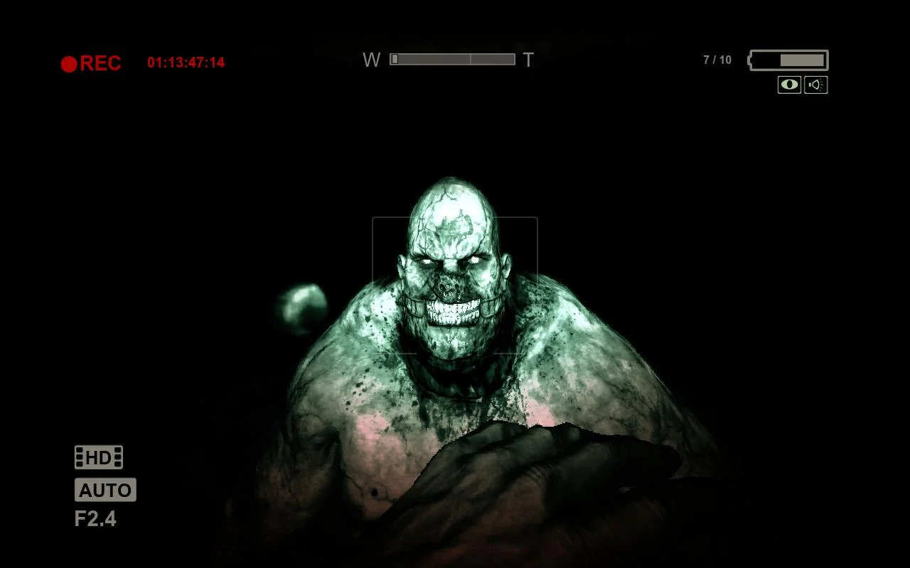

Historia
A história de Outlast 2 segue o jornalista Blake Langermann e sua esposa, Lynn, investigando um assassinato no deserto do Arizona, que os leva a uma cidade remota chamada Temple Gate, habitada pelo fanático religioso Sullivan Knoth e seus seguidores do culto Testamento do Novo Ezequiel. Após um acidente de helicóptero, Blake precisa resgatar sua esposa, descobrindo que o culto acredita que o apocalipse está a caminho e que Lynn carrega o Anticristo. O jogo combina horror psicológico e fanatismo religioso, com Blake sofrendo de alucinações e traumas do passado, culminando em um final ambíguo sobre a realidade e a loucura do personagem
Outlast
Outlast 1 foi criado em 4 de setembro de 2013 pela Red Barrels sendo um jogo de terror inovador na epoca
Inimigos
Os inimigos de Outlast 1 são a principal causa do medo de Outlast 1 pois Você o jogador nunca sabe quando ira encontrar Inimigos

O Chris Walker é o principal inimigo de Outlast 1 ele fica rondando pelo Asilo de Mount Massive
Historia
Chris Walker era um Ex-Militar Americano que serviu no Afeganistão que sofreu Traumas psicológicos Oque levou ele a ser levado à clínica psiquiatrica de Mount Massive onde foi submetido a experimentos que o transformaram em um monstro chamado de Variante
Dr. Trager
Historia
O Dr. Trager assim como outros habitantes do Asilo de Mount Massive é um psicopata sádico e um assasino em massa a capacidade mental dele parece operar de uma forma altamente funcional oque faz ele ainda ter uma noção da realidade mesmo que superficial
.jpg)
Walrider
Historia
O Walrider é uma entidade de nanotecnologia, resultado do "Projeto Walrider" da Corporação Murkoff, no qual o Dr. Wernicke procurava controlar um enxame de robôs através de um paciente com dor física e mental intensa. O paciente Billy Hope tornou-se o primeiro hospedeiro bem-sucedido, mas o Walrider escapou e assassinou a todos, eventualmente possuindo o jornalista Miles Upshur após a morte de Hope.
O Asilo
O Asilo de Mount Massive prometia ser um lugar para ajudar pessoas com problemas psicologicos mas na verdade era um lugar para fazer experimentos de controle mental chamado de Projeto Walrider Comandado pela Empresa Murkoff Onde fazia experimentos de controle mental onde Os pacientes do asilo eram submetidos a sessões de terrapia atraves do Motor Morfogênico oq fazia os pacientes enlouquecerem e fazendo mudanças geneticas em seu corpo e mente Chamados de Variantes